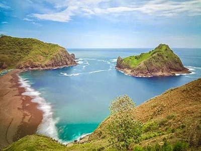
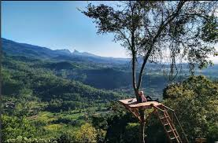

Baca selengkapnya........
Pantai Payangan
Profile Singkat Pantai Payangan
Pantai Payangan salah satu pantai di Jember yang sangat unik dan menarik perhatian banyak wisatawan. Keunikan di Pantai Payangan adalah adanya 4 pantai, 3 bukit, dan 1 pulau di sekitar kawasan wisata ini. Pantai Payangan dapat menjadi salah satu destinasi wisata pantai yang dapat menjadi rujukan Anda untuk menghabiskan waktu liburan bersama keluarga.Baca selengkapnya........

Teluk Love
Profile Singkat Teluk Love
Teluk Love atau Pantai Payangan merupakan obyek wisata di Jember yang memiliki suatu keunikan, yaitu adanya 4 pantai, 3 bukit, dan 1 pulau. Keunikan Teluk Love inilah yang menjadikan pantai ini semakin ramai dikunjungi wisatawan dari berbagai daerah.Baca selengkapnya........

Baca selengkapnya........
Puncak SJ88
Profile Singkat Puncak SJ88
Objek wisata Jember yang terletak di Desa Sucopangepok, Kecamatan Jelbuk ini menawarkan pemandangan alam nan hijau dari puncak. Sebagian besar pengunjungnya datang dan menghabiskan waktu dengan duduk di gardu pandang S J88.Baca selengkapnya........